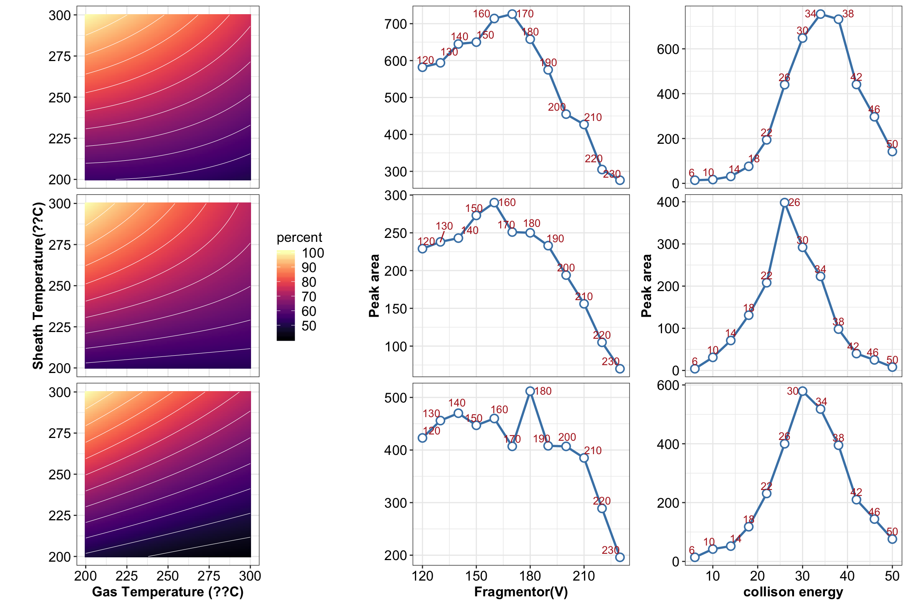
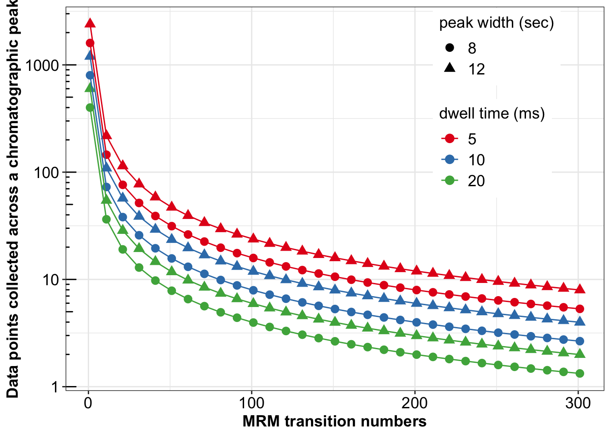

Lyu Weiting, Bo Yuan Updated on Jan 6, 2020
The R code has been developed with reference to R for Data Science (2e), and the official documentation of tidyverse, and DataBrewer.co. See breakdown of modules below:
Data visualization with ggplot2 (tutorial of the fundamentals; and data viz. gallery).
Data wrangling with the following packages: tidyr, transform (e.g., pivoting) the dataset into tidy structure; dplyr, the basic tools to work with data frames; stringr, work with strings; regular expression: search and match a string pattern; purrr, functional programming (e.g., iterating functions across elements of columns); and tibble, work with data frames in the modern tibble structure.
library(readxl)
library(rebus)
library(broom)
library(RColorBrewer)
library(viridis)
library(gridExtra)
library(cowplot)
library(scales)
library(plotly)
library(circlize)
library(ggrepel)
library(tidyverse)theme_set(theme_bw() +
theme(axis.text = element_text(size = 13, color = "black"),
axis.title = element_text(size =13, face = "bold", color = "black"),
legend.text = element_text(size = 13, color = "black"),
legend.title = element_text(size = 13, color = "black")))path = "/Users/Boyuan/Desktop/My publication/N.S. fruit alkaloid quant QqQ/Publish ready files/ALL DATA.xlsx"
d = read_excel(path, sheet = "ESI Central composite design")
a = seq(from = -1, to = 1, by = .02)
x = rep( a , each = 101)
y = rep( a, 101)
p = data.frame(x,y)
p1 <- p %>%
mutate(`Gas temp` = 250 + 50 * p$x) %>%
mutate(`Sheath temp` = 250 + 50 * p$y) %>%
mutate(
`253.1 transition` = -5.08e+02 + 1.827 * `Gas temp` + 3.43 * `Sheath temp` + -1.57e-03 * `Gas temp` * `Gas temp` + -1.57e-03 * `Sheath temp` * `Sheath temp` + -6.00e-03 * `Gas temp` * `Sheath temp`,
percent.253 = `253.1 transition` / max(`253.1 transition`) * 100,
`271.2 transition` = -2.02e+02 + 3.99e-01 * `Gas temp` + 1.61 * `Sheath temp` + 2.00e-04 * `Gas temp` * `Gas temp` + -1.20e-03 * `Sheath temp` * `Sheath temp` + -2.600e-03 * `Gas temp` * `Sheath temp`,
percent.271 = `271.2 transition` / max(`271.2 transition`) * 100,
`396.4 transition` = -2.78e+02 + 2.49e-01 * `Gas temp` + 2.72e+00 * `Sheath temp` + 1.03e-03 * `Gas temp` * `Gas temp` + -7.65e-04 * `Sheath temp` * `Sheath temp` + -4.90e-03 * `Gas temp` * `Sheath temp`,
percent.396 = `396.4 transition` / max(`396.4 transition`) * 100)
# tidy up
p1 = p1 %>% select(-contains("transition")) %>%
gather(-c(1:4), key = transition, value = percent)# plot countour plot
plt.countour = p1 %>%
ggplot(aes(`Gas temp`, `Sheath temp`, z = percent)) +
geom_tile(aes(fill = percent)) +
scale_fill_viridis(option = "A") +
stat_contour(color = "white", size = 0.2) +
facet_wrap(~transition, nrow = 3) +
coord_fixed() +
theme(strip.background = element_blank(),
strip.text = element_blank()) +
labs(x = ("Gas Temperature (??C)"),
y = ("Sheath Temperature(??C)") )
# plt.countour# frgamentor test plot
f = read_excel(path, sheet = "Fragmentor voltage")
plt.fragmentor = f %>% gather(-1, key = transition, value = "response") %>%
ggplot(aes(x = fragmentor, y = response)) +
geom_line(color = "steelblue" , size = 1) +
geom_point(size = 3, shape = 21, fill = "white", color = "steelblue", stroke = 1) +
geom_text_repel(aes(label = `fragmentor`),
color = "firebrick", nudge_y = +5, size = 3.6 )+
facet_wrap(~transition, nrow = 3, scales = "free_y") +
ylab(" Peak area ") +
xlab(" Fragmentor(V) ") +
theme(strip.background = element_blank(),
strip.text = element_blank())
# plt.fragmentorCE = read_excel(path, sheet = "Collision energy")
plt.CE = CE %>% gather(-1, key = "transition", value = "response.CE") %>%
ggplot(aes(x = `collison energy`, y = response.CE )) +
facet_wrap(~transition, scales = "free_y", nrow = 3) +
geom_line(color = "steelblue" , size = 1) +
geom_point(size = 3, shape = 21, fill = "white", color = "steelblue", stroke = 1) +
geom_text_repel(aes(label = `collison energy`),
nudge_y = +5, color = "firebrick", size = 3.6) +
theme(strip.background = element_blank(),
strip.text = element_blank()) +
ylab(" Peak area ")
# plt.CE# facet wrap all plot
plot_grid(plt.countour, plt.fragmentor, plt.CE,
nrow = 1, rel_widths = c(4, 3, 3))
m = read_excel(path, sheet = "MRMs")
m = m %>%
mutate(`peak width (sec)` = factor(`peak width (sec)`),
`dwell time (ms)` = factor(`dwell time (ms)`),
group = str_c("PW ", `peak width (sec)`, "; ", "DT ", `dwell time (ms)`))
m %>%
ggplot(aes(x = `transition number`, y = `data points collected`,
color = `dwell time (ms)`, shape = `peak width (sec)`)) +
geom_point(size = 3) +
geom_line(aes(group = group)) +
scale_y_log10() + annotation_logticks(sides = "l") +
scale_color_brewer(palette = "Set1") +
theme(legend.position = c(.8, .75)) +
labs(y = "Data points collected across a chromatographic peak",
x = "MRM transition numbers")